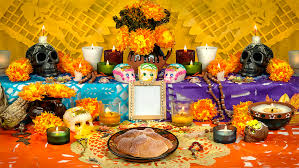
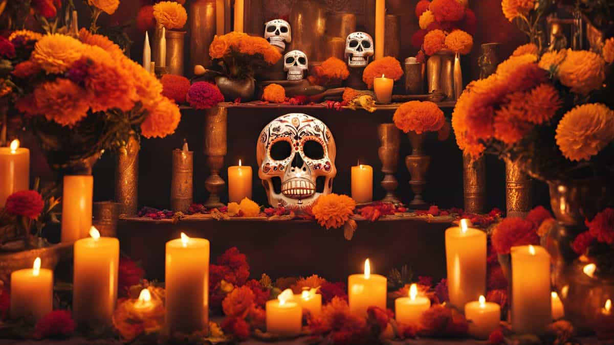
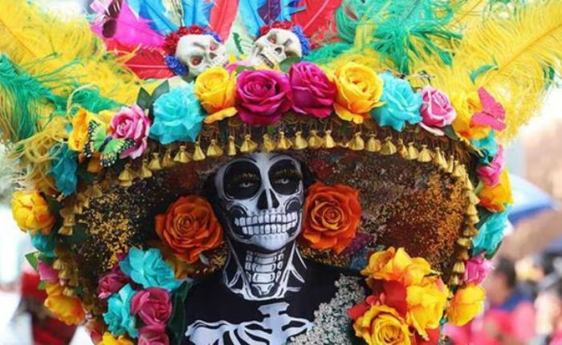

Dia de muertos
Que son los altares

El altar de muertos es un elemento fundamental en el conjunto de tradiciones mexicanas del Día de Muertos, que consiste en instalar altares domésticos en honor de los muertos de la familia donde se ofrece como ofrenda alimentos, velas, flores y objetos de uso cotidiano del difunto
En que consiste el día de muertos
.jpeg)
El Día de Muertos en la visión indígena implica el retorno transitorio de las ánimas de los difuntos, quienes regresan a casa, al mundo de los vivos, para convivir con los familiares y para nutrirse de la esencia del alimento que se les ofrece en los altares puestos en su honor.
Que representa los 7 niveles del altar de muertos
Cada nivel representa un aspecto del viaje espiritual del alma hacia el descanso eterno; desde el inframundo hasta la resurrección
Que representa la catrina
La Catrina es un personaje creado por el pintor, ilustrador y caricaturista mexicano de Aguascalientes, José Guadalupe Posada, es la figura que más se asocia al Día de Muertos y a la muerte en general en nuestro país, siendo uno de los iconos con los que México es conocido en el mundo entero.
Que dia se festeja

Según el calendario católico designó el 1 de noviembre como el Día de Todos los Santos y corresponde a los niños o muertos chiquitos, mientras que el 2 de noviembre es llamado el Día de los Muertos, es decir, todos los adultos.